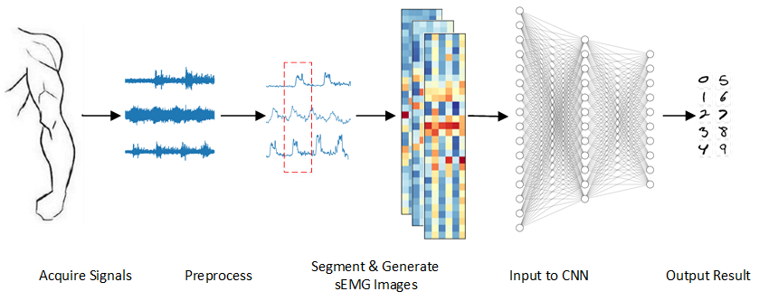

Shuhao Qi
Research Assistant
Southern University of Science and Technology
qish (at) mail.sustech.edu.cn
Research Interests
- Robot Control and Decision Making:: Optimal Control, Reinforcement Learning
- Robot Perception and Artificial Intelligence: Signal Processing, Patern Recognition, Deep Learning
Experience
- [May 2020 - Present] Southern University of Science and Technology
Research Assistant in CLEAR Lab
Principal Investigator: Prof. Wei Zhang- Project: Motion Control of Legged Robot
- [Sep 2017 - Jan 2020] Beihang University
M.Eng. in Control Science and Engineering
Advisor: Prof. Weihai Chen
- Thesis: sEMG-based Extraction of Motion Intention and Assist-As-Needed Control of Rehabilitation Robot
- [Sep 2013 - Jul 2017] University of Electronic Science and Technology of China
B.Eng. in Mechanical and Automation Engineering
- Thesis: Laser-SLAM based on Iterative Closest Point and Graph Optimization
Publications
-
sEMG-based recognition of composite motionwith convolutional neural network
Shuhao Qi, Xingming Wu, Weihai Chen, Jianbin Zhang, Jianhua Wang
Sensors and Actuators, A: Physical (Q1, IF=2.904). [PDF] -
Recognition of composite motions based on semg via deep learning
Shuhao Qi, Xingming Wu, Jianhua Wang, Jianbin Zhang
14th IEEE Conference on Industrial Electronics and Applications (ICIEA 2019). -
Damping vibration analysis of adual-axis precision force sensor based on passive eddy current
Xiantao Sun, Wenjie Chen, Weihai Chen, Shuhao Qi, Jun Jiang, Cungang Hu, Jun Tao
Journal of Physics D: Applied Physics. -
Design and analysis of a large-rangeprecision micromanipulator
Xiantao Sun, Wenjie Chen, Weihai Chen, Shuhao Qi, Wang Li, Cungang Hu, Jun Tao
Smart Materials and Structures.
Selected Projects
Quadruped Robot
- Stairway Climbing of Quadruped Robot(Optimal Control, Jun. 2020–Present)
Extract environment information from depth camera and utilize MPC to make robot track the reference trajectory.

Rehabilitation Robot
-
sEMG-based Active Control of Rehabilitation Robot (Force Control, Jan. 2019–Jan. 2020)
Adjust the joint torque of the upper-limb rehabilitation robot according to the amplitude of sEMG signals. -
sEMG-based Motion Recognition (Deep Learning, Jun. 2018–Jan. 2019)
Transform sEMG signals into the defined “sEMG Images” and utilize CNN to classify corresponding motions.
Wheeled Mobile Robot
- Laser-SLAM based on ICP and Graph Optimization (SLAM, Oct. 2016–Jun. 2017)
Establish a scan-to-map ICP algorithm and utilize Least Square method to optimize graph after close-loop detection. - RoboMasters Competition (Embedded System, Mar. 2015–Jul. 2015)
Design “Gunner” robot which can accurately hit the target from a long distance
Artificial Intelligence
- Tianchi Competition: Zero-Shot Detection (Transfer Learning, Sep. 2018–Nov. 2018)
Use ResNet to extract visual features and combine semantic information to classify unseen categories.(Rank: 32/3225)
Automation Equipment
-
Control of Precision Micromanipulator (Signal Processing, Mar. 2019–Jun. 2019)
Establish upper machine to control piezoceramics and process signals from multiple sensors. -
Automatic Packaging Machine (Embedded System, Feb. 2016–May 2016)
Design an automatic machine for small merchants, which can fold the carton and seal tape automatically.
Awards
- [Jun 2019] Best Paper Finalist Certificate of ICIEA2019
- [Jun 2017] Outstanding Graduate of UESTC
- [Jul 2015] National First Prize & Best Technology Award of RoboMasters
Services
- Invited Reviewer for IEEE Sensors Journal
- Invited Reviewer for ROBIO2018
Powered by Jekyll and Minimal Light theme.